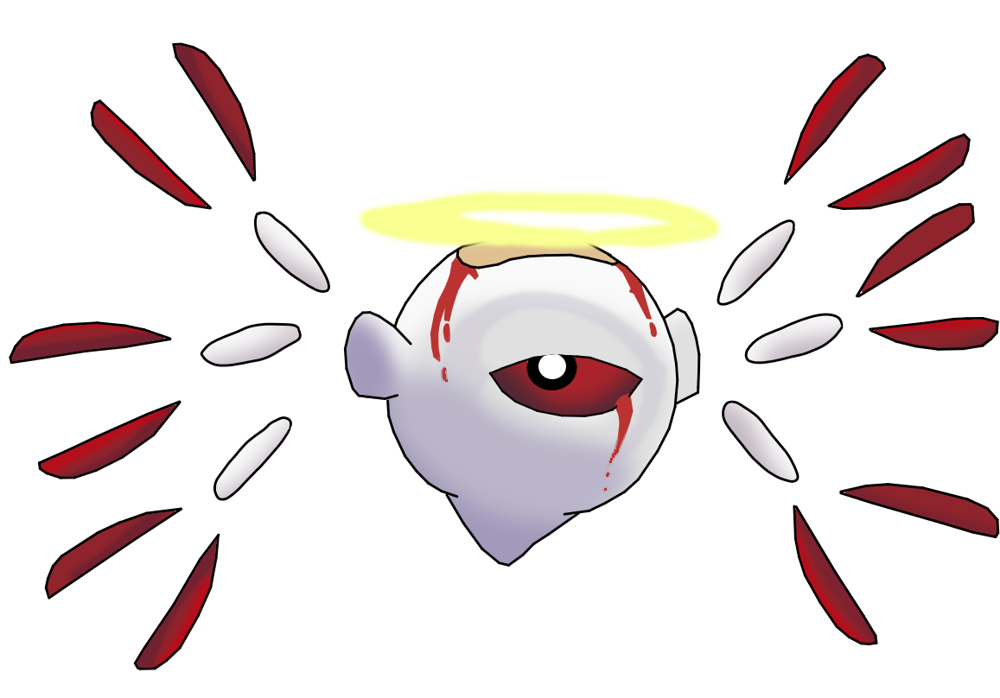
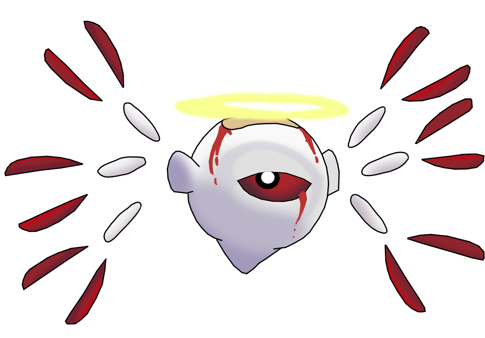

Zero and subsequently, Zero^2, are the first time the Kirby series really dived into cosmic horror, and the “character” so to speak, is a very amorphous white blob in its first appearance, and something angelic looking in its second appearance. In both cases they have blood red eyes. They appear to have some amount of control over void-like enemies known as dark matter that Kirby combats and are generally highly mysterious. All the while, zero shows oddly similar connections to the main protagonist themselves.
Most of the themes covered by zero, and subsequently dark matter, are very primal ones, generally representing negative emotions and fear, as well as judgment and corrupting chaos. Throughout the games in which it appears, it brainwashes and corrupts well established characters, as well as urging people close to it to its own bidding.
The biggest thematic relevance that shows up with this boss in specific is actually how it was originally defeated, that being through an artifact known as the “love-love stick” which is inherently a magic wand powered by positive emotions, and specifically, an artifact that kirby managed to obtain through cooperation and helping those around him. In this sense, these cosmic horrors, creeping their influence upon the normally bubbly dreamland and planet popstar, are perfect reflections of nihilism and general negativity at an uncaring world, and an uncaring universe. And as such, they're only weakness comes when kirby, someone who can and seemingly does make friends with everyone, works together, often with those who Zero has corrupted in some form and thus pulling that corruption out of them, and giving them hope once more.